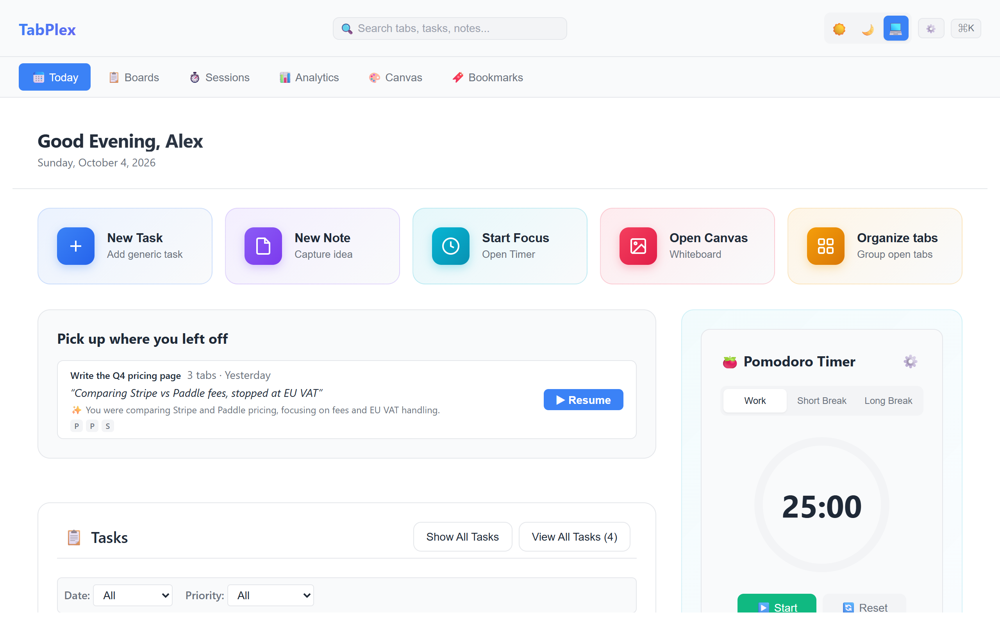
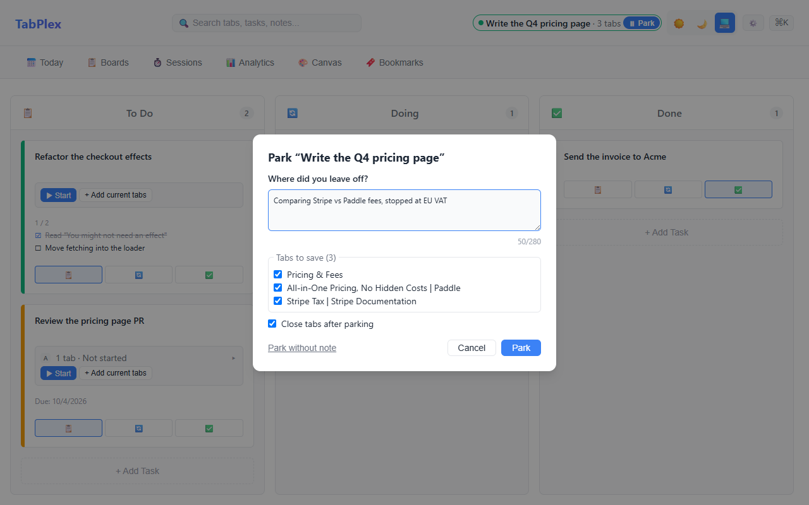
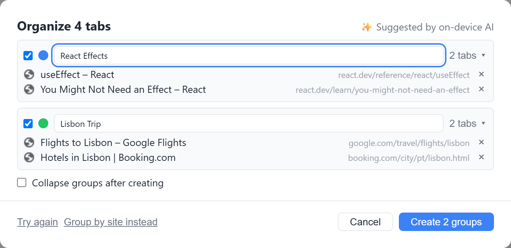
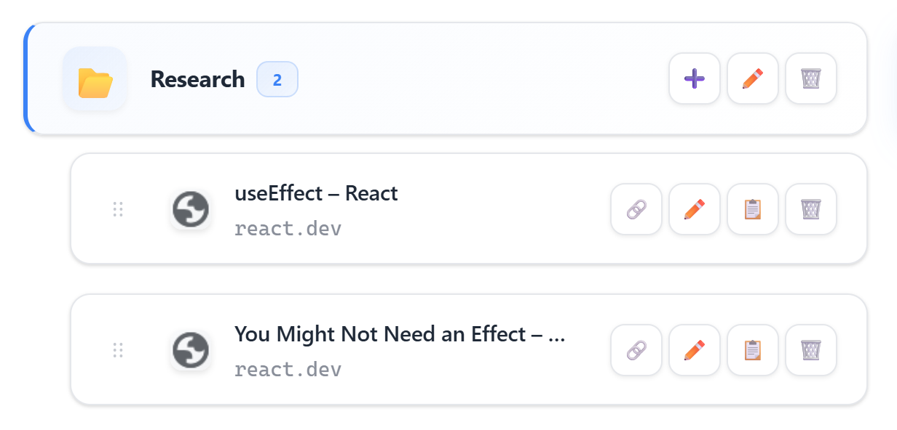

TabPlex gives every task its own tabs. Park your work with a note when you switch, resume it in one click, and turn tab chaos into tidy groups. Tasks, notes, boards and a focus timer, all in one private workspace.

Opens in its own tab from the TabPlex toolbar icon.
A task can own a set of tabs. Start it and its tabs open in a labelled Chrome tab group. Switching to something else? Park it with a one-line "where I left off" note and the tabs close. Resume later and you're back exactly where you were.

TabPlex suggests Chrome tab groups for your loose tabs: by what you're working on with Chrome's built-in AI, or by site when AI isn't available. Rename, recolour or drop tabs in a preview, then create the groups. Changed your mind? Undo.

Save tabs into folders, search them, drag them around, and pull in pages from your browser history. Tasks get a Kanban view with priorities, due dates and checklists.

A built-in Pomodoro timer that can start with a task and pause when you park it.
Capture ideas next to your tasks. Everything is saved in your browser, on this device.
See how often you switched context and how many tabs parking closed for you.
Browse and organize your Chrome bookmarks, and save browsing sessions to restore later.
A whiteboard for sketching plans and diagrams beside your work.
Follows your system theme, or pick one yourself.
Three steps, no lost tabs.
Add the tabs you're using to a task, or just start it. Its tabs open in a Chrome tab group named after the task.
Type where you left off. The tabs close, and the task remembers them and your note.
One click on Today reopens the group and shows your note. Closing the group by hand parks it safely too.
TabPlex keeps everything in your browser. There's no account, no TabPlex server and no analytics.
TabPlex is free on Microsoft Edge Add-ons. It's coming to the Chrome Web Store; until then, Chrome users can download the latest release from GitHub and load it in Chrome.
Add to Microsoft Edge